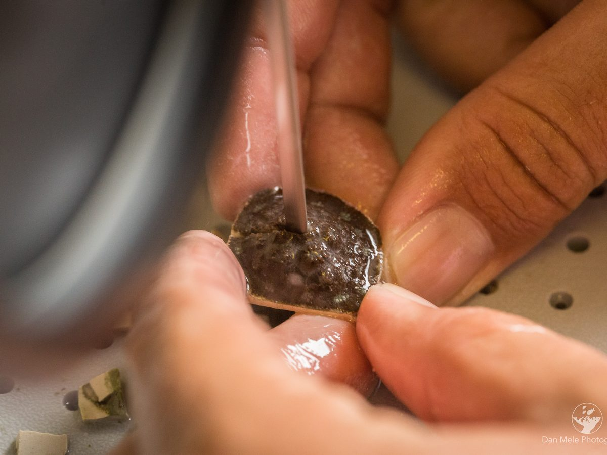
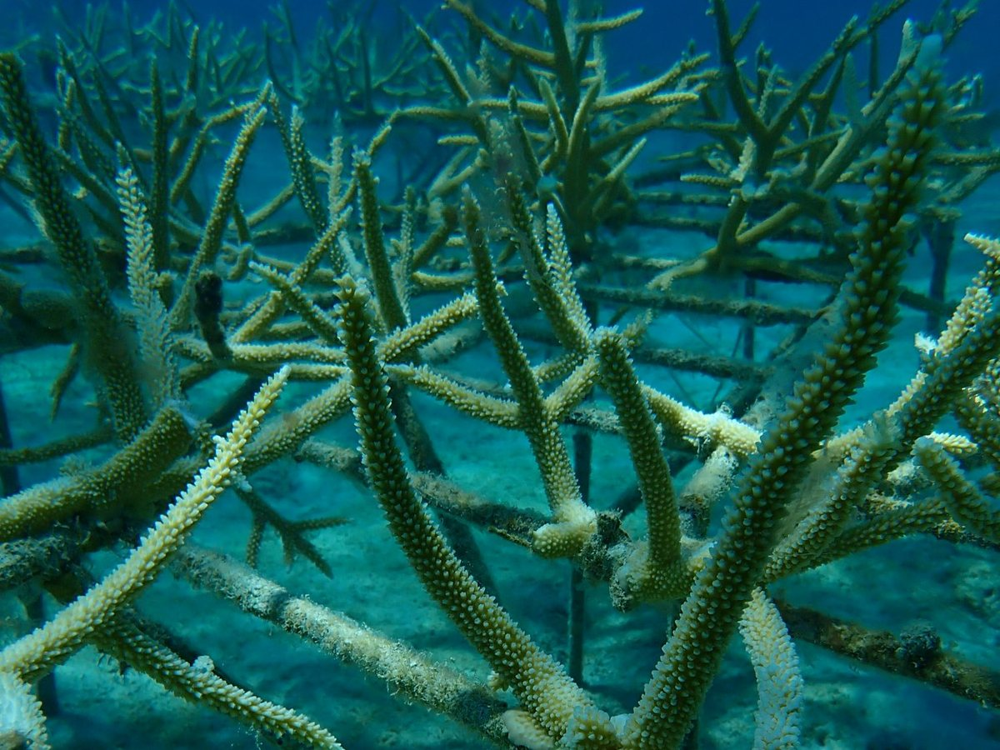
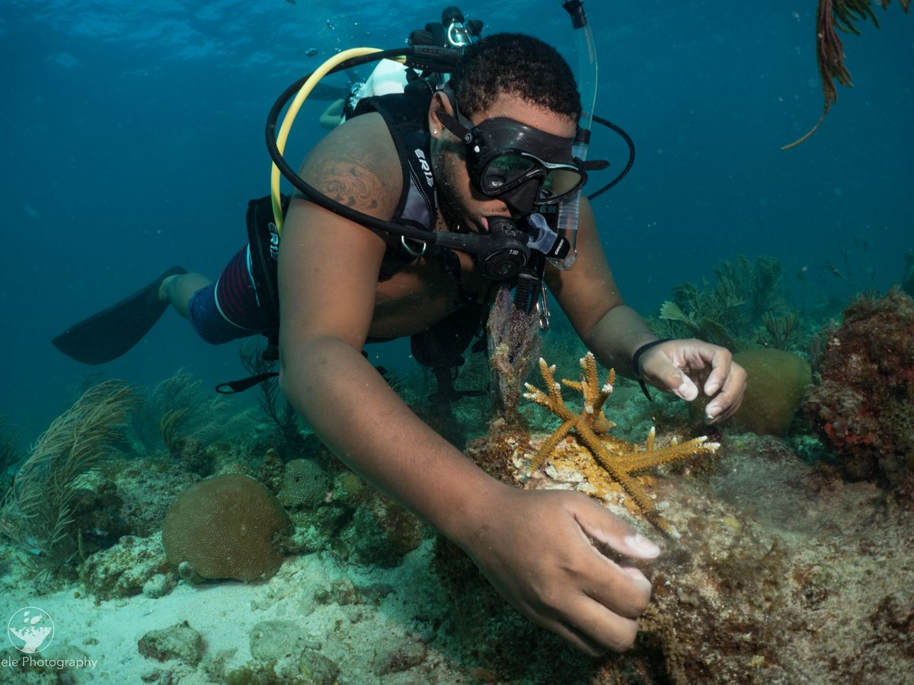
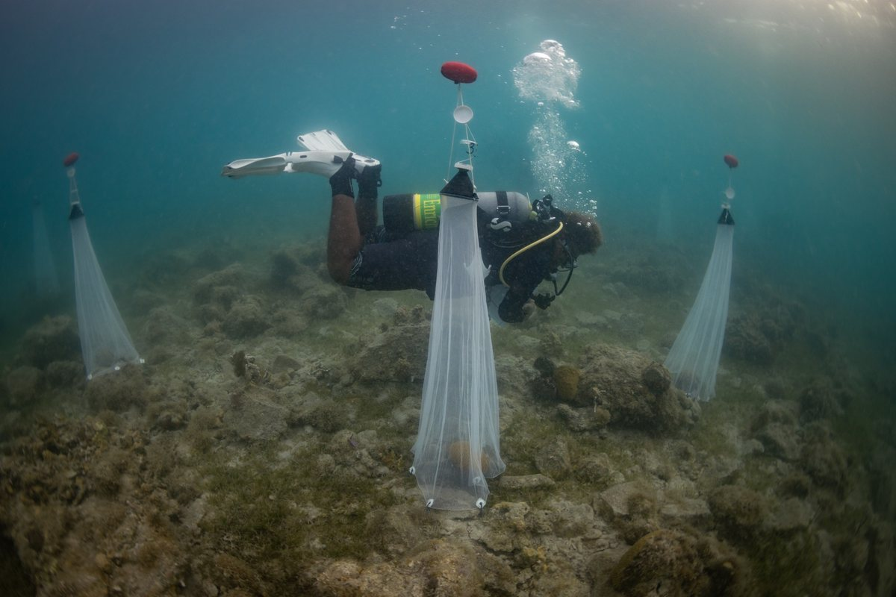
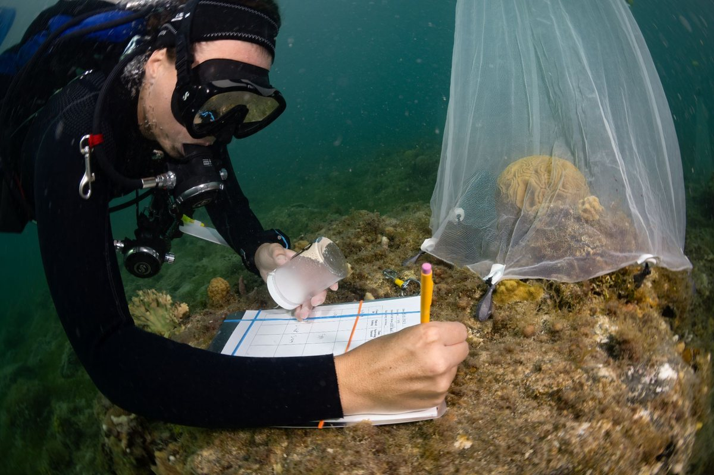
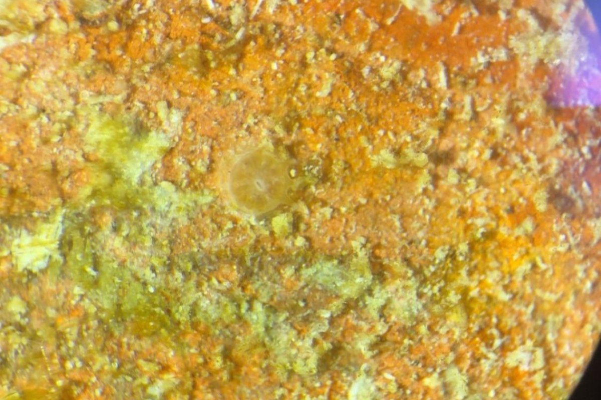

Restore
Growing corals on land and in the water — then putting them back.
Restoration
Coral restoration is an important component in the field of ecological restoration, which is focused on repopulating reefs that have degraded over time with more resilient corals to restore reef function.
Reef degradation is attributed to the multiple, sometimes simultaneous, stressors that coral reefs are under. These stressors include temperature stress from global warming that leads to coral bleaching, an incredibly stressful state for corals. Stressors also include pollution, especially chemical and plastic pollution, and increased sediments from coastal development. The result of these stressors are things like disease outbreaks and mass coral mortalities.
Reef Response researches best practices for coral restoration, incorporating citizen scientists, in an effort to mitigate and offset coral loss at the local level. We are incorporating cutting-edge experimental techniques for restoration and incorporating community involvement to replant coral around St. Thomas and St. John, USVI.
Microfragmentation
In our land-based nursery, Reef Response uses a novel technique in coral restoration known as micro-fragmentation. This technique works by fragmenting a piece of coral into 1×1 cm pieces. Because of a wound-healing response, these smaller fragments grow many times faster than larger pieces of coral.
We grow the fragments on small cement pucks until they fill out the diameter in approximately six months. At this point they can either be outplanted back on the reef or fragmented again to increase our brood stock.
What is most exciting is the ability of fragments cut from the same piece of coral to fuse back together into one large piece. This greatly reduces the time it takes for a coral to reach sexual maturity and begin reproducing, helping to contribute even more coral to the reef community.


In-water nursery
Our in-water coral nurseries are the foundation of the outplanting program. Fragments of opportunity are used to populate our nursery structures, where corals are cared for and monitored as they grow.
We use two types of structure. PVC “trees” hold branching corals in midwater, hung from arms where water moves freely past them. Rebar tables carry corals closer to the seafloor and take the species that suit a flat frame.
Reef Response personnel designed the specialty rebar nursery at Lovango Cay, where visitors can experience our work.

Coral outplanting
Once the nursery corals are large enough, we move them to reefs determined to be good locations for repopulating. These corals are then attached to the reef with cement or marine epoxy and are regularly monitored to make sure they remain healthy in their new location.
Our monitoring program involves measuring increases in coral cover and changes in fish communities in response to coral outplanting.
Breeding the corals we hold
Keeping a coral alive preserves its genetics. Getting it to reproduce puts those genetics back into the population.
We work on spawning and induced spawning with mountainous star coral (Orbicella faveolata), grooved brain coral (Diploria labyrinthiformis) and pillar coral (Dendrogyra cylindrus), and have been expanding our capacity for coral reproduction work, including hosting participants in the Pillar Coral Spawning Learning Exchange.
Assisted sexual reproduction
Corals spawn once a year, on a handful of nights, and most of what they release never meets a partner. We improve those odds. Reef Response sets nets over healthy adult colonies on the reef to collect gametes as they are released, then carries them back to the land-based nursery, where we assist fertilization and give the larvae a surface to settle on.
Every one of those settlers is genetically distinct from anything already in our nurseries. Microfragmenting copies a coral; sexual reproduction makes a new one. When the babies are large enough to outplant, they add genetic diversity to the reefs we are restoring, which is what gives those reefs something to adapt with.



Where the corals go
Our nurseries and outplanting sites run from Flat Cay and Great St. James to Lovango Cay and the reefs of St. John: 24 locations in all.
Grow a coral with us
$25 raises a fragment in our nursery until it is ready for the reef.